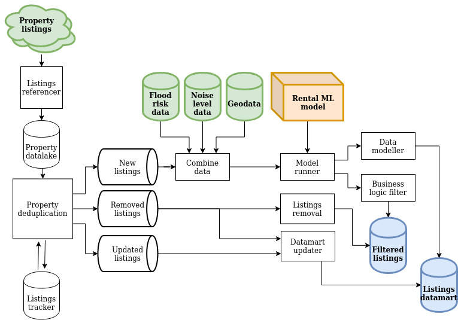

Wayhome helps you buy a home. I built a pipeline that automatically selects the properties Wayhome could buy, to present to potential customers.
Skills employed: Software design, specification gathering, data pipelines, data collection, databases, BigQuery, PostgreSQL, Google cloud platform, Cloud Run, Python (SQLAlchemy, pytest, Invoke), TDD, project design, multi-threading, Linux.
Basic schematic of the property processing pipeline.
Wayhome helps its customers buy their home - the customer buys 5%, Wayhome buys 95%. The customer then pays rent on the part they don’t own, and gradually buys out Wayhome
Wayhome needed to automatically select the properties a potential customer could choose, from a pool of hundreds of millions of property updates.
The properties we presented to the customer had to be both good for the customer and good for Wayhome - good quality, fair rent and the house price likely to grow. These properties needed to be selected automatically, there are thousands of new properties listed in the UK a day. The data scientists had previously built metrics and machine learning models to decide which properties to show, these needed to be reliably applied to all newly listed properties.
I designed and built a batch processing pipeline to serve the property listings to our customers. The pipeline ran daily - the most rapidly changing input, these listing updates, arrived at a rate of a few thousand a day, while the time to purchase a property is typically months. A delay of 24 hours to display the property was fine.
The listings were gathered from our providers every day and stored in a data lake. For new listings, the data was initially cleaned and then combined with geographical data, including flood and noise data. We then used our in-house machine learning model to predict the likely rent a property would bring.
Finally, using heuristics calculated by the data team, we filtered for properties we could likely buy, and sent those listings to be displayed on our website.
The data pipeline ran for several months, delivering the transformed listings data to our potential customers. The pipeline ran at greater than 95% reliability, sufficient to fully satisfy the team at Wayhome.
In addition to being shown to the customers, the property data needed to be straightforwardly analysed by the data team in a listings datamart.
The raw listings were not useful for the data scientists - it was a large amount of data, hundreds of millions of rows, with thousands added and updated every day. This data was spread across multiple sources, in different formats, it wasn’t always correct or consistent and had many duplicates. This data needed to be transformed to allow straightforward analysis by the data team and stored in a datamart for easy access.
The initial gathering, storing, cleaning and combining was handled by the customer listings data pipeline. Unlike the customer listings pipeline, the properties weren't filtered - the data team wanted to analyse all the historical listings. The datamart pipeline transformed the data into a normalised model, and loaded it into the datamart for the data team to use.
The listings datamart was used regularly by the data team in their analytics - it became the primary reference for listings data, allowing the data team to more rapidly analyse clean, well modelled data, helping deliver timely analysis for Wayhome.
This initial pipeline was built delivering value in small chunks - the highest value work, delivering listings to customers, was handled first, then each table in the analytics datamart was added one at a time. This work was completed, and fairly reliably ran each day.
Additionally, I wrote a test framework to allow automated testing and test-first development when writing our BigQuery queries.
As there were many queries being processed, these were batched and run concurrently. Once we had the initial pipeline running, we found a number of limitations with BigQuery - a wait of two hours to update data, leading to processing delays and the datamart being in an inconsistent state. Additionally, the queries to BigQuery would often hang. As more queries were added to the pipeline, these failures caused significant decreases in reliability, needing the pipeline to be regularly restarted.
This was addressed in two ways - firstly the tables that managed the pipeline and the tables in the analytics datamart were moved to PostgreSQL, eliminating the update delay and removing the unreliable queries, and secondly we detected hung queries, abandoning and restarting them. With these changes, the reliability of the pipeline satisfied all our stakeholders.